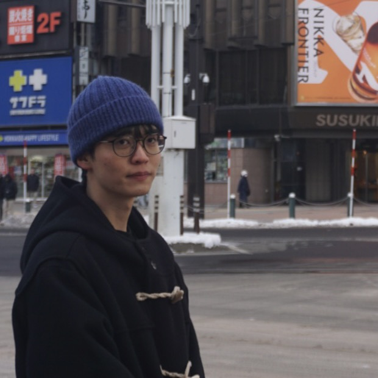
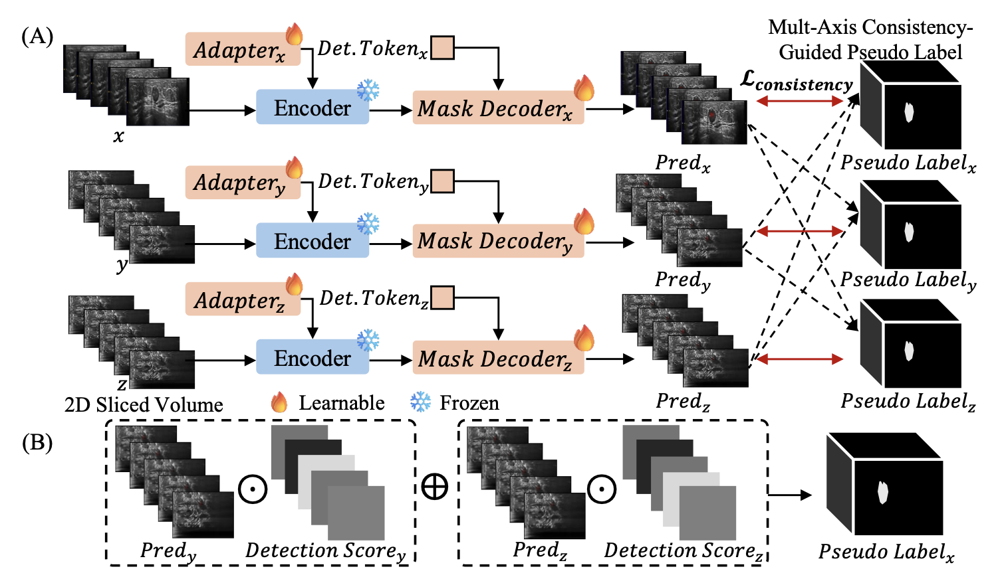
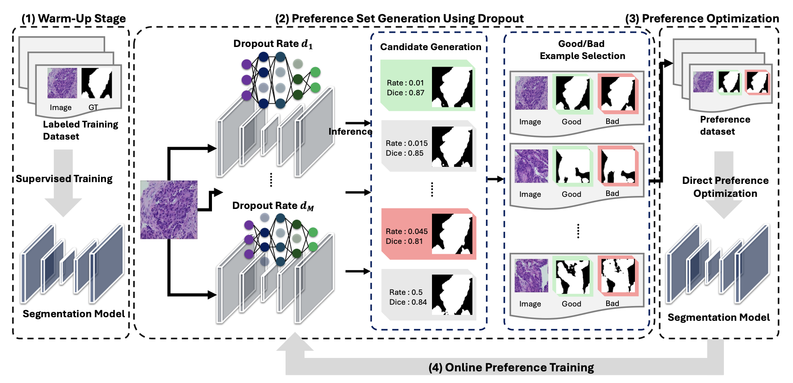
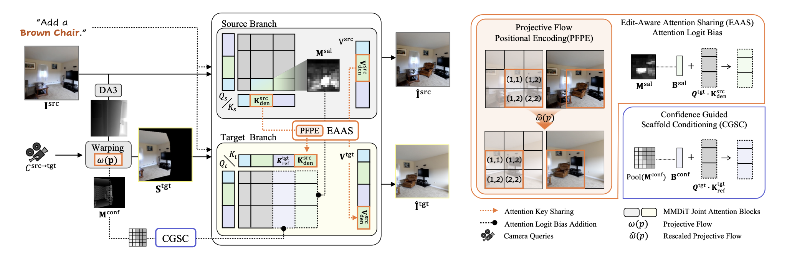

Hi there, I'm
Jiwon Jang
M.Sc. Student · KAIST
I am an M.Sc. student in Culture Technology at KAIST, advised by Prof. Sunghoon Im in the Robotics and Vision Lab (RV Lab). My research focuses on physical AI, vision-based robotics, and reinforcement learning.
Previously, I received my B.S. in Computer Science from DGIST, where I worked on medical image segmentation and preference optimization with Dr. Soopil Kim.

News
Sep 2026
Started M.Sc. at KAIST RV Lab.
Sep 2026
Our paper accepted to MICCAI 2026 as an Early Accept (Top 9%), Oral.
Feb 2026
Graduated from DGIST with a B.S. in Computer Science.
Research Interests
Robotics
Computer Vision
NLP
Publications
{kind=link}

MICCAI 2026Early Accept · Top 9%Oral
Multi-View Consistency-Based Adaptation of SAM2 for 3D ABUS Tumor Segmentation
{kind=link}

ICLR 2027Under review
Model Agnostic Preference Optimization for Medical Image Segmentation
{kind=link}

AAAI 2027Under review
Revise Once, View Everywhere: Text-Editable Single-Image Novel View Synthesis
* Equal contribution
Education
Sep 2026 – Present
KAIST
M.Sc. in Culture Technology, Robotics and Vision Lab
Feb 2022 – Feb 2026
DGIST
B.S. in Computer Science, Minor in Electrical and Electronics Engineering
Jun 2024 – Jul 2024
KAIST
Exchange Student, Mad Camp
Experience
Jun 2025 – Aug 2025
AI Research Intern, UNIVA
Retrieval-augmented generation for LLMs; MCP servers for tool-augmented LLM applications
Projects
Apr 2025 – Present
Vision-Language Navigation for Factory Environments
MSIT National R&D Project (ETRI, KETI, KAIST) — on-device VLM and real-time mobile intelligence for autonomous mobile agents
Honors & Awards
Feb 2024
Encouragement Award
DGIST Undergraduate Group Research Program
Teaching
Feb 2026 – Jun 2026
TA, Machine Learning
DGIST · 50+ students
Aug 2024 – Dec 2024
TA, Object-Oriented Programming
DGIST · 100+ students
Academic Service
2026
Student Volunteer
IEEE VR 2026